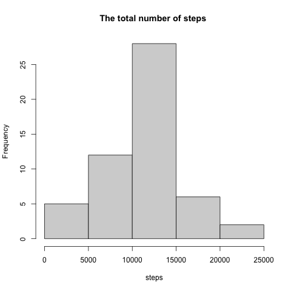

reproAssign1
Load activity data:
activity <- read.csv("./activity.csv", header=TRUE, stringsAsFactors = FALSE)Calculate the total number of steps taken per day:
totSteps <-aggregate(steps ~ date, activity, sum)
totSteps## date steps
## 1 2012-10-02 126
## 2 2012-10-03 11352
## 3 2012-10-04 12116
## 4 2012-10-05 13294
## 5 2012-10-06 15420
## 6 2012-10-07 11015
## 7 2012-10-09 12811
## 8 2012-10-10 9900
## 9 2012-10-11 10304
## 10 2012-10-12 17382
## 11 2012-10-13 12426
## 12 2012-10-14 15098
## 13 2012-10-15 10139
## 14 2012-10-16 15084
## 15 2012-10-17 13452
## 16 2012-10-18 10056
## 17 2012-10-19 11829
## 18 2012-10-20 10395
## 19 2012-10-21 8821
## 20 2012-10-22 13460
## 21 2012-10-23 8918
## 22 2012-10-24 8355
## 23 2012-10-25 2492
## 24 2012-10-26 6778
## 25 2012-10-27 10119
## 26 2012-10-28 11458
## 27 2012-10-29 5018
## 28 2012-10-30 9819
## 29 2012-10-31 15414
## 30 2012-11-02 10600
## 31 2012-11-03 10571
## 32 2012-11-05 10439
## 33 2012-11-06 8334
## 34 2012-11-07 12883
## 35 2012-11-08 3219
## 36 2012-11-11 12608
## 37 2012-11-12 10765
## 38 2012-11-13 7336
## 39 2012-11-15 41
## 40 2012-11-16 5441
## 41 2012-11-17 14339
## 42 2012-11-18 15110
## 43 2012-11-19 8841
## 44 2012-11-20 4472
## 45 2012-11-21 12787
## 46 2012-11-22 20427
## 47 2012-11-23 21194
## 48 2012-11-24 14478
## 49 2012-11-25 11834
## 50 2012-11-26 11162
## 51 2012-11-27 13646
## 52 2012-11-28 10183
## 53 2012-11-29 7047Generate histogram of the total number of steps taken each day:
png(file="TotSteps.png")
with(totSteps, hist(steps, main="The total number of steps ", xlab = "steps", col="lightgray"))
##dev.off()Histogram of the total number of steps taken each day:

Calculate and report the mean and median of the total number of steps taken per day
##mean and median of the total number of steps taken per day
meanStep <- mean(totSteps$steps)
medianStep <- median(totSteps$steps)The mean of the toal number of steps taken per day: 1.076618910^{4}
The median of the total number of steps taken per days: 10765
Make a time series plot:
## time series plot
inerv <-aggregate(steps ~ interval, activity, mean, na.rm = TRUE)
require(ggplot2)## Loading required package: ggplot2ggplot( data = inerv, aes( interval, steps )) + geom_line() ## max number of steps in a 5-mins interval
maxInter <- inerv[which.max(inerv[,2]),1]835 interval has the maximum number of steps
Calculate and report the total number of missing values in the dataset
totNum <- length(which(is.na(activity$steps)))The total number of missing values is 2304
Fill in the missing data
##imputing missing values
v <- aggregate(steps ~ interval, activity, mean, na.rm = TRUE)
activity[which(is.na(activity$steps)),]$steps <- v[v$interval == activity[which(is.na(activity$steps)),]$interval,]$steps
TotStepsByDay <- aggregate(steps ~date, activity, sum)
TotStepsByDay## date steps
## 1 2012-10-01 10766.19
## 2 2012-10-02 126.00
## 3 2012-10-03 11352.00
## 4 2012-10-04 12116.00
## 5 2012-10-05 13294.00
## 6 2012-10-06 15420.00
## 7 2012-10-07 11015.00
## 8 2012-10-09 12811.00
## 9 2012-10-10 9900.00
## 10 2012-10-11 10304.00
## 11 2012-10-12 17382.00
## 12 2012-10-13 12426.00
## 13 2012-10-14 15098.00
## 14 2012-10-15 10139.00
## 15 2012-10-16 15084.00
## 16 2012-10-17 13452.00
## 17 2012-10-18 10056.00
## 18 2012-10-19 11829.00
## 19 2012-10-20 10395.00
## 20 2012-10-21 8821.00
## 21 2012-10-22 13460.00
## 22 2012-10-23 8918.00
## 23 2012-10-24 8355.00
## 24 2012-10-25 2492.00
## 25 2012-10-26 6778.00
## 26 2012-10-27 10119.00
## 27 2012-10-28 11458.00
## 28 2012-10-29 5018.00
## 29 2012-10-30 9819.00
## 30 2012-10-31 15414.00
## 31 2012-11-02 10600.00
## 32 2012-11-03 10571.00
## 33 2012-11-05 10439.00
## 34 2012-11-06 8334.00
## 35 2012-11-07 12883.00
## 36 2012-11-08 3219.00
## 37 2012-11-11 12608.00
## 38 2012-11-12 10765.00
## 39 2012-11-13 7336.00
## 40 2012-11-15 41.00
## 41 2012-11-16 5441.00
## 42 2012-11-17 14339.00
## 43 2012-11-18 15110.00
## 44 2012-11-19 8841.00
## 45 2012-11-20 4472.00
## 46 2012-11-21 12787.00
## 47 2012-11-22 20427.00
## 48 2012-11-23 21194.00
## 49 2012-11-24 14478.00
## 50 2012-11-25 11834.00
## 51 2012-11-26 11162.00
## 52 2012-11-27 13646.00
## 53 2012-11-28 10183.00
## 54 2012-11-29 7047.00png(file="TotStepsByDay.png")
with(TotStepsByDay, hist(steps, main="The total number of steps by day", xlab = "steps", col="lightgray"))
##dev.off()meanStepsAfterImpute = mean(TotStepsByDay$steps)
medianStepsAfterImpute = median(TotStepsByDay$steps)The mean of the total number of steps per day after data impute is 1.076618910^{4}
The median of the total number of steps per day after data impute is 1.076559410^{4}
Those 2 values are not significantly different from the values caculated in first part of the assignment. So the impact of imputing missing data on the estimates of the total dialy number of steps is very minimal to none.
Create factor variable in dataset for weekday
weekdays1 <- c('Monday', 'Tuesday', 'Wednesday', 'Thursday', 'Friday')
activity$date <- as.Date(activity$date)
activity$wDay <- factor((weekdays(activity$date) %in% weekdays1)+1L,
levels=1:2, labels=c('weekend', 'weekday'))Make time series plots for Weekday and Weekend
library(ggplot2)
wkSteps <-aggregate(steps ~ interval+wDay, activity, mean)
png(file="wkSteps.png")
qplot(interval, steps, data=wkSteps, geom = "line", facets =wDay~.)
##dev.off()